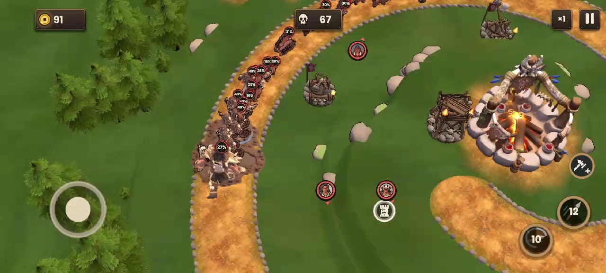
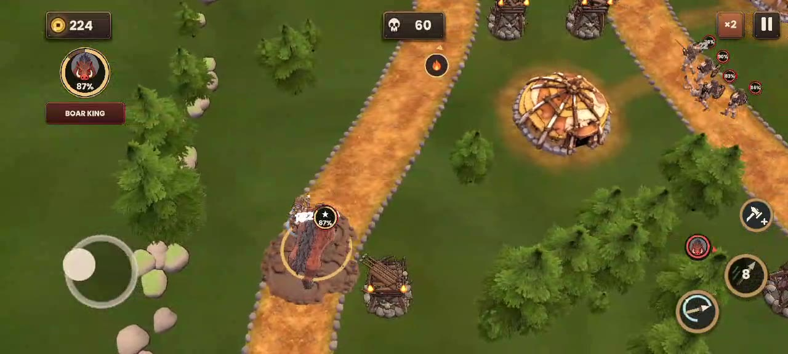
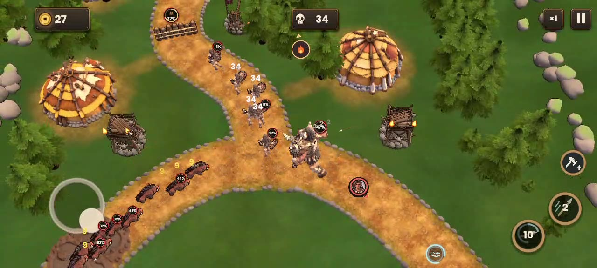
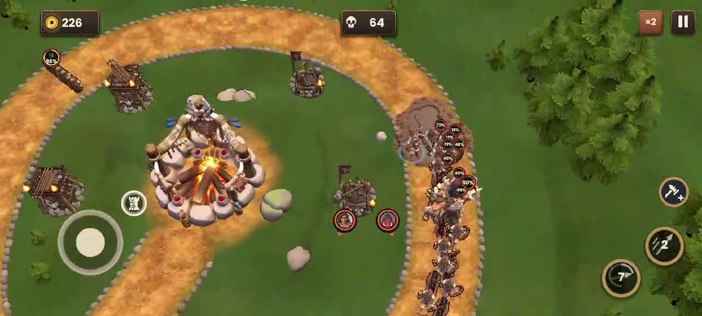
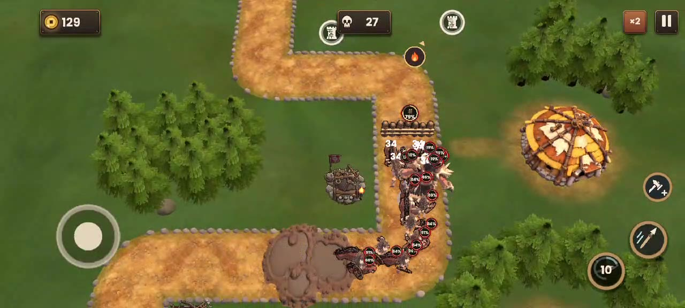
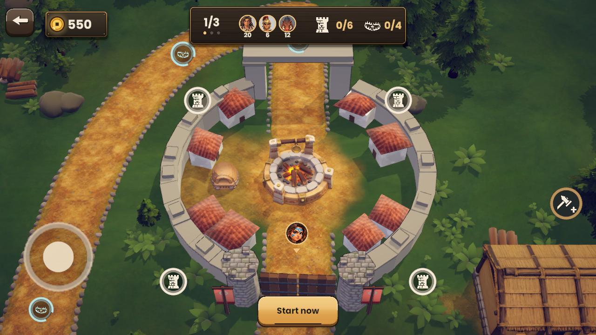

TRIBAL CAMPAIGN
Gameplay on Hard.
Five opening levels, from the first palisade to the Boar King.
Screenshots










DEVELOPMENT UPDATE · 11 NOVEMBER 2026
From the gates to the Acropolis.
This update reduces the amount of geometry the game has to process in Loop, Gates, Quarry, Acropolis and Three Fronts. On the Acropolis, the game now prepares the pavement and checks where the heroine can move in smaller steps, so fewer tasks block the game at once as the map loads.
